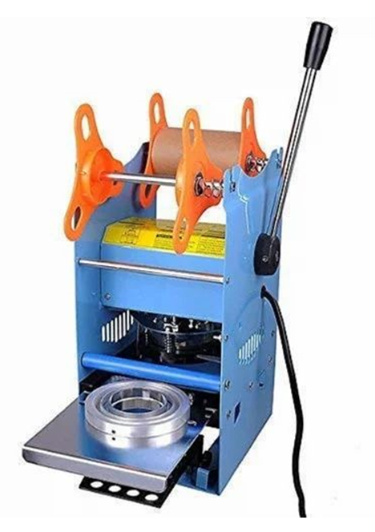

CUP SEALING MACHINE
Manual Cup Sealer Machine
Price:
Inquiry for Best Quote
- Multi-Diameter Compatibility: Sealing diameters of 70mm, 75mm, 90mm & 95mm
- High Speed Capacity: Seals 500 to 600 cups per hour
- Energy Efficient: 200W low power consumption motor (220V / 50Hz)
- Compact & Lightweight: Weighs only 9 kg with 260 x 240 x 650 mm dimensions
- Spill-Proof Seals: Delivers airtight, leak-free seals for beverages & dairy products
The Alfa Tech India Manual Cup Sealer Machine seals cups one by one with precision and reliability. Suitable for cafes, restaurants, food stalls, takeaway counters, and small-scale food packaging businesses. Built from high-quality rust-proof materials, it seals beverages, smoothies, curd cups, bubble tea, pudding, and hot or cold food items cleanly and efficiently.
Technical Specifications
Equipment Name
Manual Cup Sealer Machine / Cup Sealing Machine
Brand
Alfa Tech India
Sealing Diameters
70 mm, 75 mm, 90 mm & 95 mm
Output Capacity
500 - 600 cups / Hour (Plastic material cups & films)
Power Consumption
200 W
Voltage / Frequency
220 V / 50 Hz
Dimensions (L x W x H)
260 x 240 x 650 mm
Weight (Approx.)
9 kg
Operation Type
Manual Lever Action Press
Applications
Food & Beverage, Takeaways, Bubble Tea, Curd, Smoothies & Catering